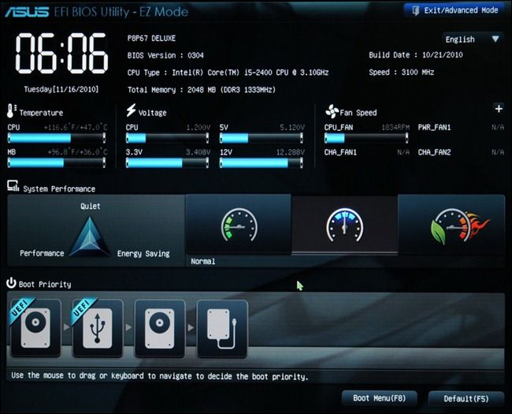

1주차 :: 과제 1
UEFI
UEFI (UEFI BIOS) 및 BIOS (레거시 BIOS 또는 기존 BIOS)는 두 가지 유형의 컴퓨터 마더 보드 펌웨어로, PC가 켜지는 방식, 부팅되는 드라이브, 인식되는 주변 장치 및 주파수까지 정의하고 CPU를 실행한다. 따라서 UEFI와 BIOS는 모두 운영 체제를 부팅하기 전에 PC를 부팅할 때 시작되는 저수준 소프트웨어이다.
UEFI는 Unified Extensible Firmware Interface의 약자이다. 2007 년 Windows가 Windows Vista 서비스 팩 1 및 Windows 7로 도입된 이후 PC의 레거시 BIOS를 점진적으로 대체하는 최신 솔루션이다. 최근 몇 년 동안 컴퓨터 제조업체는 UEFI를 지원하는 데스크톱과 랩톱을 출시하고 있다. 기존 BIOS 및 향후 펌웨어 모드를 장악하는 것을 목표로 하는 후속 제품이다.
1. UEFI는 2.2TB 이상의 HDD 또는 SSD를 지원한다. 기존 BIOS는 작은 파티션과 드라이브를 지원한다.
2. UEFI에는 기존 BIOS보다 더 유용한 세부 설정 메뉴가 있다.
3. UEFI는 보안 부팅을 지원하여 PC가 맬웨어에 의해 손상되는 것을 방지한다.
4. UEFI는 32 비트 또는 64 비트 모드에서 실행되며 주소 지정이 가능한 주소 공간은 BIOS에 따라 증가하며 부팅 프로세스가 훨씬 빠르다.
5. UEFI는 EFI 실행 파일을 실행하는 데 사용하는 GPT (GUID 파티션 테이블)의 큰 장점을 가지고 있으며, 큰 크기의 하드 드라이브를 감지하고 읽는 데 문제가 없다.
맬웨어: 악성 소프트웨어로서, 사용자의 이익을 침해하는 모든 소프트웨어를 포함
PXE(Preboot eXecution Environment) 부팅
운영체제가 설치되어 있지 않는 원격지의 컴퓨터를 네트워크 도메인에 참가시키는 것만으로도 부팅을 시킬 수 있는 환경을 말한다. CD-ROM이나 USB와 같은 데이터 저장소에 구애받지 않고 운영체제 설치가 가능하다. PXE는 기본적으로 클라이언트이기 때문에 서버가 필요하다. 서버에는 DHCP 서버와 tftp서버 그리고 초기 램디스크 이미지(initrd.img)와 커널 이미지(vmlinuz)가 있으면 모든 준비가 된다.DHCP: Discover : IP 할당을 위한 DHCP 요청을 Broadcast 형태로 해당 Subnet에 전달한다.
DHCP: Offer : 다음으로 전달받은 DHCP 요청에 대해 DHCP Server가 Client한테 특정 IP에 대한 할당을 제안한다.
TFTP: Request/Response : 네트워크 연결 이후에 Client는 DHCP Server로부터 전달받은 IP 및 TFTP Server의 주소 정보를 토대로 TFTP Server의 부트로더를 다운로드한다.
Boot Process: Load the Kernel : 이렇게 다운받은 부트로더를 통해 Kernel파일을 로드하여 OS 인스톨러를 수행한다
WOL과 AC부팅
Wake on Lan(이하WOL)은 컴퓨터가 특정 네트워크 메시지를 받으면 켜질 수 있도록 하는 표준입니다. 다시 말하면 컴퓨터가 꺼져 있는 상태에서 '매직 패킷'을 받으면 컴퓨터가 네트워크 신호에 의해 켜지게 되는 것이다.네트워크 연결에서 모든 데이터는 '패킷'의 형태로 다른 컴퓨터와 주고 받는다. 여기서 WOL 기능을 할 수 있게 특별히 디자인된 패킷을 '매직 패킷'이라 하며, 이 패킷을 받는 컴퓨터는 전원을 켜는 동작을 수행한다. WOL은 브로드캐스트 방식의 기술로, LAN에서만 사용할 수 있는 것처럼 보이지만 인터넷 전역에서 사용 가능하다. 하지만 아쉽게도 ipTime 공유기의 경우에는 포트 포워딩 시, 브로드 캐스트 IP로는 포트 포워드가 불가능하므로 구성할 수 없다. 따라서 ipTime 공유기를 사용하는 사용자라면 WAN 환경에서 WOL을 하기 위해서는 전용 앱을 설치한 후, 사용하여야 한다.
WOL은 BIOS설정과 운영체제에서의 설정 두 가지 모두 해야 사용할 수 있다. 또한 WOL은 운영체제가 정상 종료 되었을 시에만 가능하다. 비정상 종료 (예. 강제종료) 상태에서는 WOL이 수행되지 않는다.
AC 부팅은 전기 회로에서 전원을 공급받아 컴퓨터 시스템을 시작하는 과정을 말한다. 이는 일반적으로 컴퓨터나 전자 장치의 전원을 켤 때 발생하는 프로세스다.
가상머신(네이티브)와 도커
가상머신(Virtual Machine)이란 Hypervisor를 이용해 하나의 Host에서 여러 개의 OS를 생성해 사용하는 방식입니다. 이들 각 OS를 Guest OS라고 하며, 서로 간에 완전히 독립된 공간을 할당받는다. 이 공간을 Virtual Machine이라고 한다. 우리에게 익숙한 VMware나 VirtualBox같은 가상머신은 호스트 OS위에 게스트 OS 전체를 가상화하여 사용하는 방식이다. 그러나, 이러한 방식의 작업은 Hypervisor를 반드시 거쳐야 하기 때문에 성능이 저하된다. 또한 각 Virtual Machine은 Guest OS를 위한 Library, Kernel 등을 모두 포함해야 하므로 배포를 위한 image 생성 시 그 크기가 커진다.도커는 컨테이너 기반의 오픈소스 가상화 플랫폼이다. 컨테이너란, 우리가 구동하려는 애플리케이션을 실행할 수 있는 환경까지 감싸서, 어디서든 쉽게 실행할 수 있도록 해 주는 기술이다. 컨테이너를 사용할 때 필요한 도구가 컨테이너 런타임이다. 그중 가장 유명한 것이 도커이며, 가상화 기술의 하나지만 기존방식과는 차이가 있다.
도커 컨테이너는 가상화된 공간을 생성하기 위해 리눅스 자체 기능인 chroot, 네임스페이스(namespace), cgroup을 사용함으로써 프로세스 단위의 격리 환경을 만들기 때문에 성능 손실이 거의 없다. 컨테이너에 필요한 커널을 공유해서 사용하고, 컨테이너 안에는 어플리케이션을 구동하는 데 필요한 라이브러리 및 실행 파일만 존재하기 때문에 컨테이너를 이미지로 만들었을 때 이미지의 용량 또한 가상 머신에 비해 대폭 줄어든다. 따라서 컨테이너를 이미지로 만들어 배포하는 시간이 가상 머신에 비해 빠르며, 가상화된 공간을 사용할 때의 성능 손실도 거의 없다는 장점이 있다.
도커에서 가장 중요한 개념은 컨테이너와 함께 이미지라는 개념이다. 이미지는 컨테이너 실행에 필요한 파일과 설정값등을 포함하고 있는 것으로 상태값을 가지지 않고 변하지 않는다(Immutable). 컨테이너는 이미지를 실행한 상태라고 볼 수 있고 추가되거나 변하는 값은 컨테이너에 저장된다. 같은 이미지에서 여러개의 컨테이너를 생성할 수 있고 컨테이너의 상태가 바뀌거나 컨테이너가 삭제되더라도 이미지는 변하지 않고 그대로 남아있다. 말그대로 이미지는 컨테이너를 실행하기 위한 모든 정보를 가지고 있기 때문에 더 이상 의존성 파일을 컴파일하고 이것저것 설치할 필요가 없다. 이제 새로운 서버가 추가되면 미리 만들어 놓은 이미지를 다운받고 컨테이너를 생성만 하면 된다. 한 서버에 여러개의 컨테이너를 실행할 수 있고, 수십, 수백, 수천대의 서버도 문제없다.
쿠버네티스
쿠버네티스는 컨테이너 런타임을 통해 컨테이너를 다루는 도구를 말한다. 쿠버네티스가 해 주는 일은 여러 서버(노드)에 컨테이너를 분산해서 배치하거나, 문제가 생긴 컨테이너를 교체하거나, 컨테이너가 사용할비밀번호나 환경 설정을 관리하고 주입해 주는 일 등입니다. 쿠버네티스의 역할은 컨테이너를 분산 배치, 상태 관리 및 컨테이너의 구동 환경까지 관리해 주는 도구이고, 도커는 컨테이너를 다루는 도구(컨테이너 런타임) 중 하나이다. 쿠버네티스는 컨테이너를 다루기 위해 도커 이외에도 다양한 컨테이너 런타임 소프트웨어를 사용할 수 있다.
포트포워딩
포트포워딩(port forwarding)은 컴퓨터 네트워크 상에서 패킷이 방화벽이나 라우터 같은 네트워크 게이트를 지날 때 IP 주소와 포트 번호 결합의 통신 요청을 다른 곳으로 넘겨주는 네트워크 주소 변환의 응용이라고 볼 수 있다. 즉, 포트 포워딩은 외부 아이피 포트번호와 내부 아이피 포트번호를 연결해주는 기능이다. 이러한 포트포워딩은 라우터에서 새로운 기능을 이용할 수 있는 강력한툴이 될 수 있으면서도 심각한 온라인 취약성에 노출시킬 수도 있다.라우터는 라우터에 연결된 모든 기기에 사설 네트워크를 구축해주는 역할을 한다. 라우터는 사설 네트워크를 구축할 뿐만 아니라 공용 IP를 할당받는데, 이때 라우터에 연결된 기기는 인터넷에 접속하기 위하여 무조건 라우터를 거쳐야 한다. 그런데 가정용 기기를 원격 기기에 직접 연결하고 싶다면, 서버 포트포워딩을 설정해야 합니다.포트포워딩은 가정용 네트워크와 원격 기기 사이를 직접적으로 연결하는 경우에 유용하다.
포트포워딩은 말 그대로 포트(port)를 열어 두는 작업이기 때문에 해킹의 위험성이 높아진다. 보안상 중요한 기기에는 포트포워딩 기능을 이용하지 않는 것이 좋다. 일반적으로 포트포워딩은 VPN 프로토콜과 함께 이용할 수 있다.
티밍(본딩)
티밍 (Teaming) : Windows 서버 LAN카드 이중화 기술본딩 (Bonging) : Linux 서버 LAN카드 이중화 기술
서버한대에 LAN 카드 2개를 장착 후 두 개의 케이블을 연결한다. 서버 한대에 각각의 다른 IP Address를 설정해서 사용해도 상관없지만 , 위 구성은 인터넷을 하기 위한 구성이기 때문에 두개의 LAN 카드를 하나로 묶어서 하나의 IP Address를 세팅한다.
1. 대역폭 병합
Network Bandwitdh(대역폭)은 네트워크에서 특정 시간 내에 전송 될 수 있는 데이터의 최대 용량을 의미한다. 네트워크의 대역폭이 높을수록, 한번에 더 많은 데이터가 전송 될 수 있는데, 1기가 네트워크 랜카드 + 1기가 네트워크 랜카드를 합쳐 2기가 네트워크 대역폭 사용이 가능해진다.
2. 로드 밸런싱 (Load Balancing)
네트워크 부하를 분배할 수 있는 기능. 하나의 랜카드에 트래픽이 많이 발생하면 다른쪽으로 트래픽을 분산하여 부하를 줄일 수 있다.
3. 네트워크 패일오버 (Netwrok Failover)
네트워크 연결이 끊어질 경우 다른 네트워크 카드로 네트워크 사용. 즉 랜칸드 두 개에 모두 랜선을 연결한 상태에서 1번 랜카드를 사용하다가 랜선이 끊어지거나 문제가 생길경우 2번 랜카드로 전환하여 네트워크를 이용할 수 있다.
LAN 카드
랜카드= NIC(Network Interface Card) 는 컴퓨터에 네트워크 연결을 제공하는 하드웨어 장치이다. 랜카드는 유선 랜카드와 무선 랜카드로 나뉘어지며, 유선 랜카드는 이더넷 케이블을 통해 유선 네트워크에 연결되며, 무선 랜카드는 와이파이 신호를 이용하여 무선 네트워크에 연결된다.
가상 사설 네트워크(VPN)
가상 사설 네트워크(VPN)는 인터넷을 통해 디바이스 간에 사설 네트워크 연결을 생성한다. VPN은 퍼블릭 네트워크를 통해 데이터를 안전하게 익명으로 전송하는 데 사용된다. 또한 사용자 IP 주소를 마스킹하고 데이터를 암호화하여 수신 권한이 없는 사람이 읽을 수 없도록 한다.
원격 데스크톱 프로토콜(RDP)
원격 데스크톱은 별도의 컴퓨터에서 멀리 떨어져 있는 데스크톱 컴퓨터에 연결하여 사용하는 기능이다. 원격 데스크톱 사용자는 데스크톱에 액세스하고, 파일을 열고 편집하며, 실제로 자신의 데스크톱 컴퓨터 앞에 앉아 있는 것처럼 애플리케이션을 사용할 수 있다. 직원은 이동 중 또는 재택 근무 중 원격 데스크톱 소프트웨어를 사용하여 업무용 컴퓨터에 액세스하는 경우가 많다RDP 프로토콜은 연결된 컴퓨터(원격 데스크톱 및 현재 사용 중인 컴퓨터) 간에 데이터를 주고받기 위한 전용 네트워크 채널을 연다. 이를 위해 항상 네트워크 포트 3389를 사용한다. 마우스 움직임, 키 입력, 데스크톱 디스플레이, 기타 필요한 모든 데이터는 대부분의 인터넷 트래픽 유형에 사용되는 전송 프로토콜인 TCP/IP를 통해 이 채널을 통해 전송됩니다. RDP는 또한 공용 인터넷을 통한 연결이 더 안전하도록 모든 데이터를 암호화한다.
RDP는 또한 데이터를 클라우드 서버나 사용자의 보호되지 않은 개인 장치에 저장하는 대신 사용자의 데스크톱에 안전하게 저장한다. 또한 RDP를 사용하면 레거시 온프레미스 IT 설정이 있는 회사의 경우 직원이 재택근무를 할 수 있다. 그러나 RDP를 사용하면 특히 로컬 인터넷 연결이 느린 경우 사용자에게 지연이 발생할 수 있다. 따라서 원격 근무 직원의 업무 수행에 방해가 되고 생산성이 저하될 수 있다. RDP에는 사이버 공격에 노출될 수 있는 심각한 보안 취약점도 있다.
RDP 프로토콜은 사용이 쉽고 해킹된 시스템을 완전히 제어할 수 있기 때문에 RDP를 표적으로 삼는 것을 선호한다. 또한 공격자가 정당한 목적으로 사용되는 프로토콜을 통해 시스템에 액세스할 수 있기 때문에 방어자가 악의적인 활동을 탐지하기가 더 어렵다.
조직은 직원 인력이 시스템에 물리적으로 접촉하지 않고 문제를 해결하기 위해 액세스할 수 있도록 원격 액세스를 활성화하는 경우가 많다. 이 기능은 유용할 수 있지만 많은 조직이 강력한 비밀번호를 요구하지 않거나 네트워크 레벨 인증을 활성화하지 않거나 원격 데스크톱을 통해 로그인할 수 있는 사용자를 제한하지 않는 등 원격 데스크톱에 액세스할 수 있는 계정을 적절히 보호하지 않는다.
권한 계정 관리 툴 제공업체 싸이코틱(Thycotic) 수석 보안 과학자 조셉 카슨은 "많은 기업이 기본적으로 RDP를 활성화된 상태로 둔다"며, "이 서비스는 시스템에 대한 관리자 수준 액세스를 제공하는 경우가 많지만 이를 보호하는 유일한 보안 통제는 단순한 비밀번호인 경우가 보통이다"고 말했다. 무작위 대입 방식과 레인보우 테이블(Rainbow Table)을 사용하는 공격자는 민감한 데이터 도난, 악성코드 심기, 데이터 포이즈닝(Data Poisoning), 기타 악의적인 활동을 위해 이 비밀번호를 깨고 시스템에 대한 완전한 액세스를 확보할 수 있는 경우가 많다. 카슨은 "RDP가 활성화된 인터넷 연결 장치를 스캔해 온라인으로 이런 시스템을 찾기가 꽤 쉽다"고 말했다.
레인보우 테이블은 해시 함수을 사용하여 만들어낼 수 있는 값들을 대량으로 저장한 표이다. 하나의 패스워드에서 시작해 변이된 형태의 여러 패스워드를 생성하여 그 패스워드의 해시를 고리처럼 연결해 일정 수의 패스워드와 해시로 이루어진 테이블이다.
VPN과 RDP의 차이
VPN은 RDP와는 완전히 다른 방식으로 작동합니다. VPN은 RDP와는 달리 사용자를 인터넷에 연결하고 다양한 보안 기능을 제공하는 것 외에는 별다른 기능이 없습니다.
RDP를 이용하면 다른 PC를 원격으로 제어하고 자동으로 해당 PC의 LAN에 액세스할 수 있으며, 원격 데스크톱용 VPN(remote desktop VPN)을 이용하면 보안과 프라이버시 보호
수준을 개선할 수 있다. 하지만 보안에 위험을 가져올 부담도 있으니 가능하다면 VPN과 RDP를 함께 사용하는 것이 좋다.
보안 네트워크에 액세스 하는 경우는 VPN를 사용해야 한다. 그러나 원격 데스크톱 제어가 필요한 경우는 RDP 소프트웨어같은 것이 필요하다. VPN은 검열되거나 제한된 사이트를 포함한 인터넷
전역을 안전하게 액세스할 수 있도록 하는 반면, 원격 데스크톱의 유일한 목적은 원격으로 컴퓨터에 액세스하여 집이나 다른 곳에서 쉽게 일할 수 있도록 하는 것이다.
하이퍼 쓰레딩과 문맥교환
하이퍼쓰레딩은 슈퍼스칼라 프로세서에서 동시에 두 쓰레드로부터 명령어를 가져와 파이프라인에 넣는 동시 멀티쓰레딩(Simultaneous Multi-Threading, SMT) 기술이다. 즉, 하나의 물리 프로세서가 두 개 혹은 그 이상의 논리 프로세서로 보이게 하는 기술이다. 이렇게 하면 제대로 활용되지 않는 프로세서 자원을 더욱 더 효과적으로 쓸 수 있다. 두 개 혹은 그 이상의 논리 프로세서를 보이게 할 수 있는 원리는 "쓰레드 문맥을 하드웨어 수준에서 복제"하기 때문이다. 게다가 이은 명령어 수준 병렬성(ILP)보다 단위가 큰 쓰레드 수준 병렬성(TLP)을 활용하는 방법이다.현대 운영체제는 모두 멀티태스킹을 지원한다. 그런데 일반적인 싱글코어 프로세서는 주어진 시간에 오직 하나의 쓰레드만 처리할 수 있다. 이런 하드웨어에서 운영체제가 멀티태스킹을 구현하려면 프로세서 자원을 여러 쓰레드에 돌아가면서 빌려주는 쓰레드 스케줄링이 필요하다. 한 쓰레드가 자신에게 주어진 시간만큼 프로세서를 썼다면 운영체제는 이 쓰레드에서 프로세서를 회수하여 다른 쓰레드에게 준다. 이것이 문맥 교환이다. 프로세서는 한 번에 하나의 쓰레드 문맥을 처리할 수 있기에 문맥 교환을 구현하려면 명시적으로 이전 문맥을 어딘가에 저장하는데, 이때 비용이 발생한다. 무작정 쓰레드를 많이 만들어 이 쓰레드들을 바쁘게 돌리면 과다한 문맥 교환 비용으로 결코 높은 성능을 얻을 수 없다.
문맥은 바로 컴퓨터 구조적 상태(architectural state)를 가리킨다. 쉽게 말하면 현재 쓰레드가 수행 중인 레지스터 값이다. 결국 쓰레드 문맥의 핵심은 결국 레지스터 집합이다. 프로세서에 레지스터 파일이 하나만 있다면 레지스터 값은 문맥 교환 시 메모리로 잠시 쫒겨 났다가 다시 복구된다. 하드웨어 멀티쓰레딩은 쓰레드 문맥을 유지하는 레지스터를 복제하여 동시에 여러 쓰레드 문맥을 유지한다. 그러니 문맥 교환 비용이 거의 들지 않으면서 여러 쓰레드를 처리할 수 있다.
멀티쓰레딩이 효과적인 이유는 문맥 교환 비용을 줄이는 것보다 더 근본적인 이유가 있다. 먼저, 쓰레드 사이에는 매우 찾기 쉬운 병렬성이 존재한다. 명령어 수준 병렬성보다 더 높은 수준의 쓰레드 수준 병렬성을 이용하는 것이다. 쓰레드 간의 뮤텍스(mutex)나 임계영역(critical section)을 이용해 서로 직렬로 수행되어야 하지 않은 이상 여러 쓰레드는 완벽하게 독립적으로, 즉 병렬로 수행될 수 있다. 하드웨어 멀티쓰레딩은 TLP를 최대한 활용하는 방법이다.
또, 멀티쓰레딩은 자원의 효율성을 극대화하는 기술이다. 달리 말하면 에너지 효율도 높일 수 있다. 비순차 실행이 순차 실행보다 더 나은 성능을 보일 수 있었던 이유는 결국 아무 일도 하지않고 낭비되는 사이클을 줄일 수 있다는 점이다.
스레드가 갖고 있는 레지스터는 "저장된 상태"를 의미한다.
CPU에 의해 처리되고 있을 때는 명령어를 가져오고, CPU가 이를 처리하는 식으로 태스크가 진행될 것이다. 당연히 명령어를 가져오고, 연산 결과를 저장하는건 레지스터가 하는 일이다. 문맥교환이 발생하면, 당연히 현재 상태를 모두 저장하고 종료해야 하니 레지스터의 값이 스택에 넣어지고 종료된다.
프로세스 제어 블록(Process Control Block, PCB) PCB 는 특정 프로세스에 대한 중요한 정보를 저장 하고 있는 운영체제의 자료구조이다.
병렬과 동시성 프로그래밍

동시성: Concurrency
동시성은 여러 작업이 겹치는 기간에 실행될 수 있음을 의미한다. 동시에 실행하는 것이 아니라 CPU가 작업마다 시간을 분할해 적절하게 context switching을 해서 동시에 실행되는 것처럼 보이게 한다. 이렇기 때문에 동시성은 구현하는 것도 디버그하는 것도 어렵다.
동시성의 핵심 목표는 유휴 시간을 최소화하는 것이다. 유휴 시간은 컴퓨터가 작동 가능한데도 작업을 하지 않는 시간으로 아무것도 안하고 놀고 있는 시간이라고 생각하면 된다. 현재 프로세스 또는 스레드가 I/O 작업, DB 트랜잭션 등등 외부 프로그램 실행을 기다리는 동안에 다른 프로세스 또는 스레드가 CPU 할당을 받는다. 그림으로 표현하면 아래와 같다.
병렬성: Parallelism
병렬성은 동일한 시간에 독립적인 작업을 실행할 수 있음을 의미한다. 동시성과는 달리 여러 작업을 다른 코어, 다른 프로세스, 별도의 컴퓨터 등에서 동시에 실행할 수 있다. 그래서 병렬 처리가 성능 향상에 필수적이라고도 한다.
한가지 예로 분산 컴퓨팅 시스템이 있다. 분산 컴퓨팅 시스템은 단일 시스템으로 실행하는 여러 컴퓨터 시스템들로 구성되어 있다. 각 컴퓨터에 존재하는 시스템들은 네트워크로 연결될 수 있다. 해당 예제 외로도 하나의 컴퓨터에서 여러 코어를 사용하여 병렬 처리를 활용할 수도 있다.
코어vs쓰레드
CPU의 Core 즉 CPU의 핵심적인 역할을 수행해내는 중심부 역할을 말하며 이 코어에서 시스템의 모든 연산을 처리한다고 보면 되겠다, 즉 CPU에서의 코어가 많은 경우 컴퓨터의 성능을 가장 좌우한다고 볼수도 있겠다, 코어의 갯수가 늘어남에 따라 명칭은 아래와같이 사용된다.
쓰레드, 멀티쓰레드라고도 표현하며 이 CPU에서의 논리연산을 실제 코어에서 처리한다고 하면 이 코어는 하드웨어 관점에서 바라 봤을때 이고, 멀티쓰레드 또는 멀티쓰레딩 은 소프트웨어 관점에서 논리적인 작업 처리 단위를 나누어 처리한다고 이해하면 되겠다, 윈도우즈를 기준으로 현재 구동되고있는 프로세스 들을 체크해보면 코어 단위가 아니라 쓰레드 단위로 취급되고 있어 이를 인텔의 경우 하이퍼쓰레딩이 라는 기술로 코어의 갯수를 논리적으로 반으로 쪼개 작업처리량을 더 늘린다고 보면 되겠다.
해당처리 속도를 나타내는 단위는 클럭(Clock)